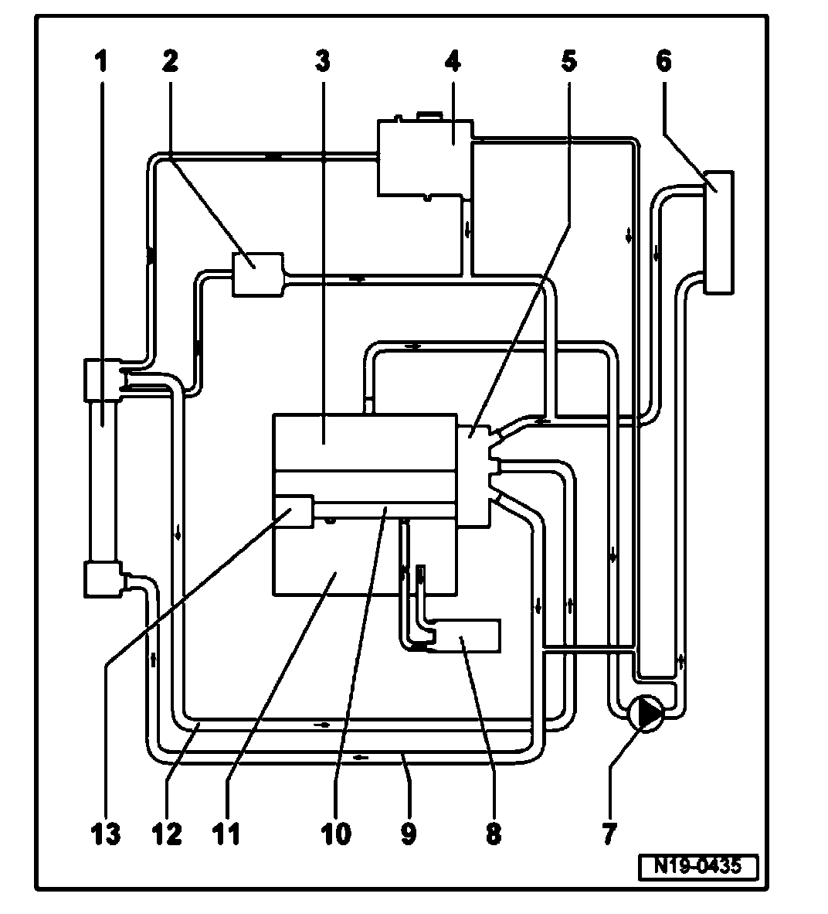

Coolant Line/Hose: Diagrams
Coolant hose connection diagram

1. Radiator
2. Oil cooler
^ For automatic transmission fluid.
3. Cylinder head
4. Expansion tank
5. Thermostat housing
6. Heat exchanger for heater unit
7. After-run coolant pump V51
8. Oil cooler
^ For engine oil
9. Upper coolant hose
10. Coolant pipe
11. Cylinder block
12. Lower coolant hose
13. Coolant pump